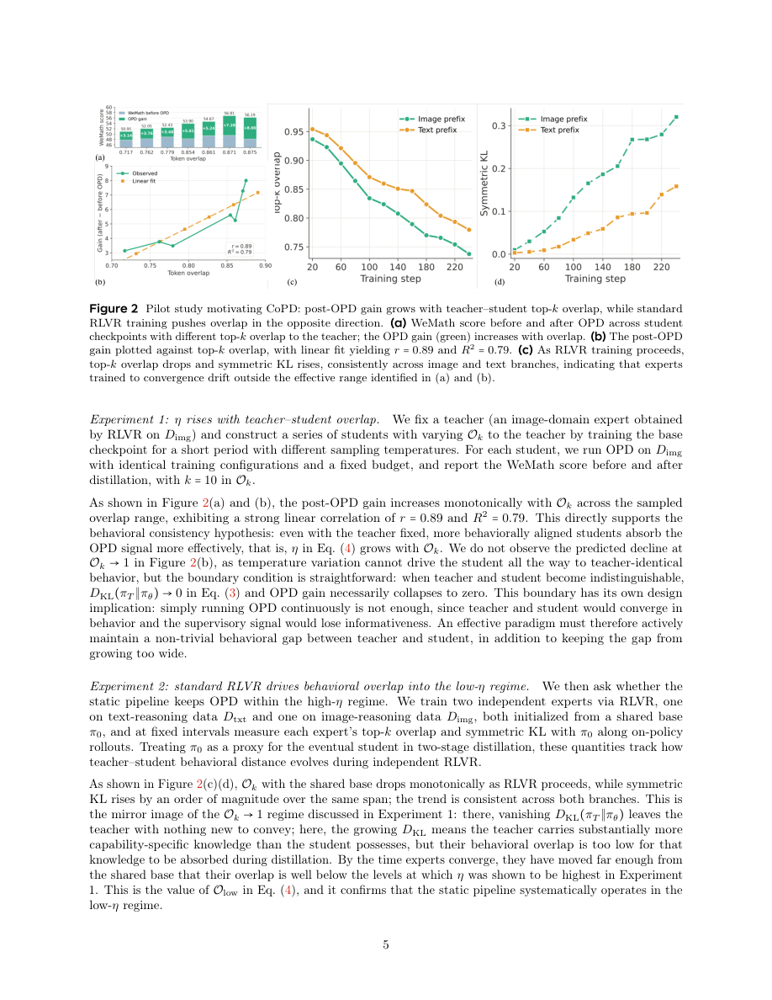

#1
★ 8/10
Co-Evolving Policy Distillation
协同演化策略蒸馏

图 Figure · Page 5 of paper
🎯 协同演化蒸馏，将文本、图像、视频推理融合进单一模型
CoPD co-evolves expert models during training to merge text, image, and video reasoning into one model.
| 维度 | 中文 | English |
|---|---|---|
| ❓ 待解决 的问题 |
当我们想让一个AI模型同时具备多种推理能力（比如文字、图像、视频理解）时，现有的两种主流方法都有缺陷：混合强化学习训练会导致不同能力之间相互干扰；而先训练专家模型再蒸馏的流水线方式，因为师生之间的行为差距太大，导致学生模型无法充分吸收老师的知识。 | When training a single AI model to master multiple reasoning skills (e.g., text, image, and video understanding), two standard approaches both fall short. Mixed RLVR training causes different capabilities to interfere with each other, while training separate expert models first and then distilling them into one student model leaves a large gap between teacher and student behaviors, losing key knowledge in the process. |
| 💡 解决 的亮点 |
• **统一失效分析**：首次系统性地揭示混合RLVR（能力间散度代价）和流水线OPD（师生行为模式差距）两种范式的失败原因。 • **双向并行蒸馏**：CoPD在RLVR训练过程中同步进行专家间的互相蒸馏，而非训练完成后再蒸馏，始终保持行为模式的一致性。 • **融合模型超越专家**：CoPD训练出的单一模型性能超越各领域的专用专家模型，说明协同演化产生了协同增益，而非简单叠加。 | • **Unified failure analysis**: First work to systematically identify why both mixed RLVR (inter-capability divergence) and pipeline OPD (teacher-student behavioral gap) fail at multi-capability consolidation. • **Bidirectional, simultaneous distillation**: CoPD runs expert training and distillation in parallel — experts teach each other *during* RLVR training, not after, keeping behavioral patterns aligned throughout. • **All-in-one outperforms specialists**: The merged CoPD model surpasses individual domain-specific experts, suggesting that co-evolution creates synergistic, not just additive, capability gains. |
| 🧪 实验 内容 |
本文在覆盖文本、图像、视频理解的多模态推理基准上评估CoPD。基线包括：混合RLVR（在一个模型中联合训练所有能力）、MOPD（先完整训练专家再进行离线策略蒸馏的标准流水线）以及各领域的单一专家模型。实验验证CoPD能否将三种模态能力集成进单一模型，同时保持或超越各专家模型的独立性能。 | The paper evaluates CoPD on multi-modal reasoning benchmarks covering text, image, and video understanding tasks. Baselines include mixed RLVR (training all capabilities jointly in one model), MOPD (the standard pipeline of training experts fully first then performing offline policy distillation), and domain-specific single-expert models. The experiments test whether CoPD can consolidate all three modality capabilities into one model while preserving or improving upon each expert's individual performance. |
| 📊 实验 结果 |
CoPD在所有文本、图像、视频推理基准上均显著优于混合RLVR和MOPD两条基线。最关键的是，CoPD训练出的全能模型在各自的任务上甚至超越了对应的领域专用专家模型——这是两条基线都无法实现的结果。论文在多个基准上报告了具体分数，CoPD在多能力模型整合的后训练场景中确立了新的最优水平。 | CoPD significantly outperforms both mixed RLVR and MOPD baselines across all evaluated text, image, and video reasoning benchmarks. Crucially, the CoPD all-in-one model even surpasses the performance of individually trained domain-specific expert models on their respective tasks — a result neither baseline achieves. The paper reports concrete benchmark scores demonstrating consistent gains across modalities, with CoPD establishing a new state-of-the-art for multi-capability model consolidation in post-training settings. |
| 🏁 结论 | CoPD证明了通过训练中双向蒸馏协同演化专家模型，可以将多模态推理能力整合进单一模型，且性能超越现有基线和领域专家。本文为大语言模型和视觉模型的后训练提供了一种有前景的模型并行训练扩展新范式。 | CoPD proves that co-evolving expert models through bidirectional, in-training distillation can consolidate multi-modal reasoning capabilities into a single model that surpasses both competing baselines and domain-specific experts. This work introduces a promising model-parallel training scaling paradigm for post-training large language and vision models. |
| 🔗 论文 链接 |
arXiv: 2604.27083v1 · 📥 PDF | |
⚙️ Method · 方法详解
CoPD同时并行地用RLVR（可验证奖励强化学习）训练多个领域专家模型。与先训练完专家再蒸馏的流水线不同，CoPD在每个训练步骤中都进行在线策略蒸馏（OPD），让每个专家实时向其他专家学习，互为老师。这种双向蒸馏使所有专家在整个训练过程中保持行为上的相互接近。最终合并的模型从所有专家处继承互补知识，同时避免了事后蒸馏中因行为差距过大导致的知识损失。
CoPD trains multiple domain-specific expert models in parallel using RLVR (Reinforcement Learning with Verifiable Rewards). Instead of waiting until experts are fully trained before distilling, CoPD introduces Online Policy Distillation (OPD) at every step during training, so each expert continuously learns from the others as mutual teachers. This bidirectional distillation keeps all experts behaviorally close to each other throughout the entire process. The final merged model inherits complementary knowledge from all experts without suffering the large behavioral gap that normally exists when distillation happens post-training.
📐 Key Formulas · 关键公式
\[\mathcal{L}_{\text{CoPD}} = \mathcal{L}_{\text{RLVR}} + \lambda \cdot \mathcal{L}_{\text{OPD}}\]
💡 CoPD的总训练目标：在每个训练步骤中，将RLVR强化学习损失与在线策略蒸馏（OPD）损失加权求和，λ控制蒸馏的强度。
CoPD's total training objective: at every training step, the RLVR reinforcement learning loss is combined with an Online Policy Distillation loss weighted by λ, balancing task-specific learning and cross-expert knowledge transfer.
\[\mathcal{L}_{\text{OPD}}(\pi_i, \pi_j) = D_{\text{KL}}(\pi_j \| \pi_i)\]
💡 在线策略蒸馏损失：用KL散度衡量专家i的策略与专家j（老师）的策略之间的差距，双向意味着i和j互相作为老师。
Online Policy Distillation loss: KL divergence measures how far expert i's policy is from expert j acting as teacher; bidirectionality means i and j swap teacher/student roles simultaneously.
🌟 Why It Matters · 为什么重要
如何在不牺牲专精能力的前提下，构建在文本、视觉、视频等多领域均表现出色的通用AI模型，是LLM后训练的核心难题——CoPD提供了一种原则性且可扩展的解决方案。其提出的模型并行协同演化范式，可能重塑社区对多能力后训练扩展的思考方式，减少对多个独立专家模型的依赖。
Building general-purpose AI models that are strong across multiple domains (text, vision, video) without sacrificing specialization is a core challenge in LLM post-training — CoPD offers a principled, scalable solution. The model-parallel co-evolution paradigm it introduces could reshape how the community thinks about scaling post-training across capabilities, potentially reducing the need for separate specialist models.